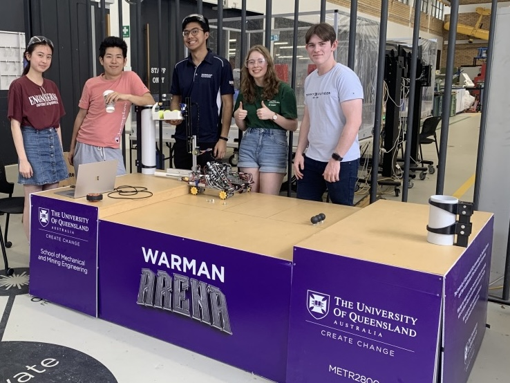
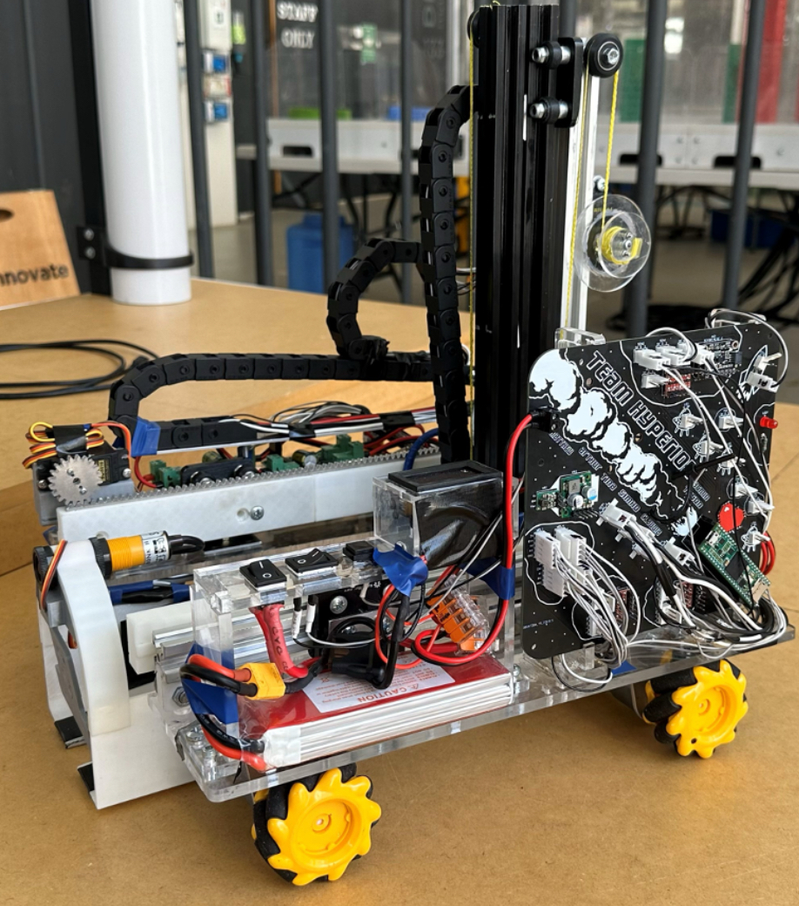
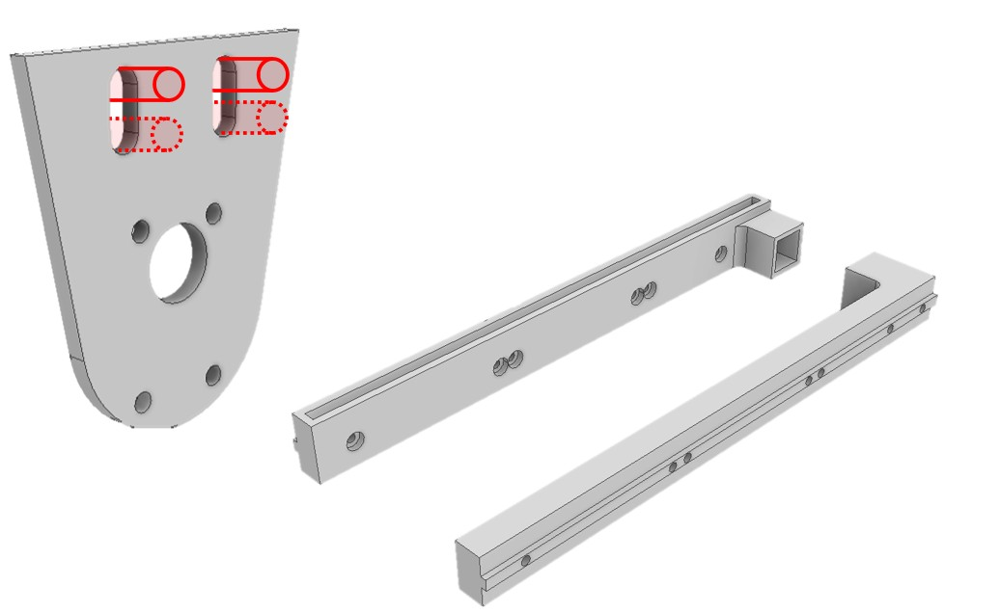
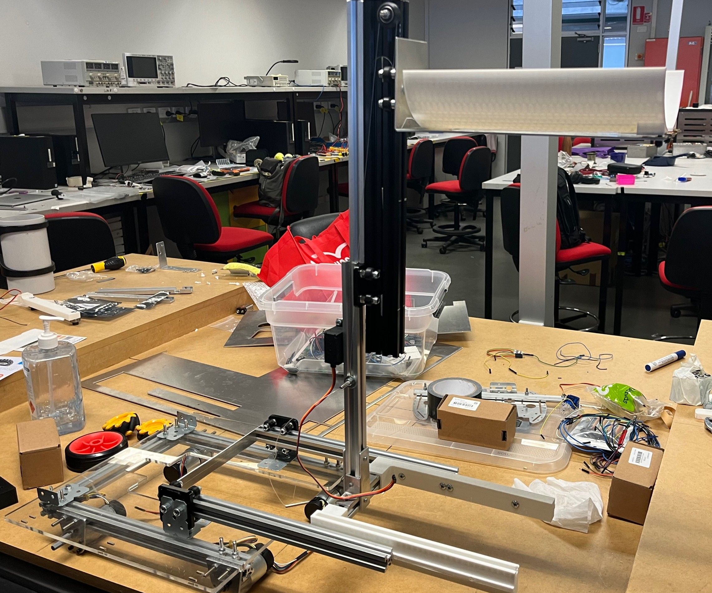
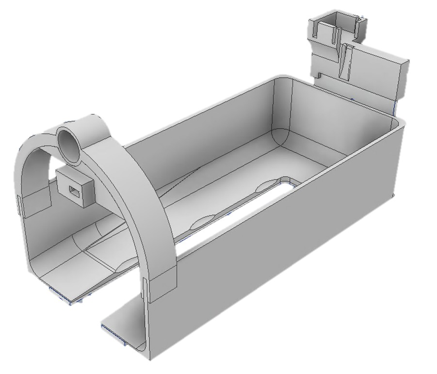
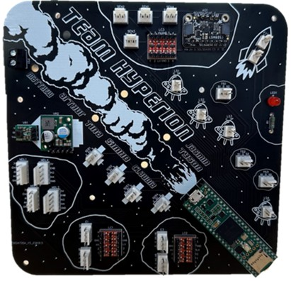

Engineering Project Portfolio
Tina (Shuting) Zheng
A small collection of my favourite projects as a final-year BE/ME Mechatronics student at UQ
Autonomous Vessel Collection and Deposit Prototype
Warman Design & Build Challenge Version (International Finals)
Final Rank: 6/18
Duration: July 2023 - October 2023
Key skills: CAD • Arduino IDE (C/C++) • Electronics • Project management • Manufacturing Techniques
We redesigned our METR2800 robot for the Warman Design & Build Challenge, adopting a forklift-inspired lifting mechanism. Building on insights from the previous design, we identified simplicity and robustness as key factors for reliability. The revised mechanism achieved this by incorporating v-slot aluminium profiles and store-bought gantries for actuation guidance, resulting in improved structural integrity, reduced mechanical complexity, and greater operational consistency.


Due to time and resource constraints, the robot was designed with a strong focus on modularity, enabling key components to be easily adjusted and replaced. One example of this was the wheel mounting system, where the wheel assemblies were attached directly to V-slot profiles which allowed for adjustable wheel heights via bolt placement. The front arm assemblies, which also housed the rack for the rack-and-pinion mechanism, were similarly designed for quick rack replacement. This proved essential, as the original acrylic rack-and-pinion components were later upgraded to aluminium to prevent material failure.



In addition to previous METR2800 components, this design also utilised:
- Infrared sensors and limit switches for closed-loop system implementation
- Teensy 4.1 microcontroller for a faster clock rate
- Continuous servo motors
- Manufactured aluminium rack and pinion linear actuation mechanisms
Similarly to METR2800, the Warman competition also allowed me to develop key skills in:
- CAD Modelling: Siemens NX, Autodesk Inventor, and AutoCAD
- Mechanical Design & Analysis: designing lightweight, functional mechanisms under space and power constraints
- Manufacturing Techniques: acrylic and fibre laser cutters, press brake machines, and 3D printing
- Electronics & Assembly: soldering, circuit assembly, and hardware troubleshooting
- Programming: Arduino IDE (C/C++)
- Project Management & Documentation: Gantt charts, risk analysis, and project management plans
